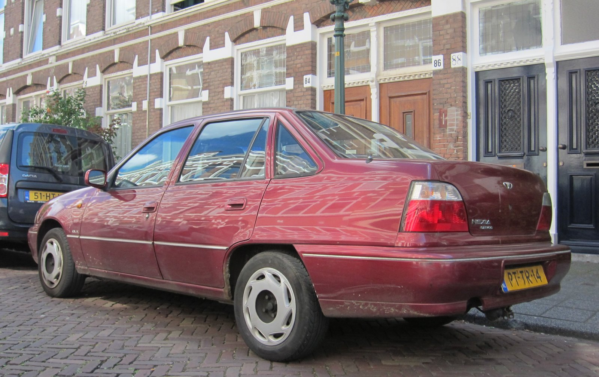

Uzbekistan and South Korea: diplomatic ties and the Daewoo investment (1992–1996)
In the first years of independence, South Korea became one of Uzbekistan's most important economic partners. Diplomatic ties established in 1992 and the automobile joint venture with Daewoo — the Asaka plant in Andijan — laid the foundation for the first large-scale car manufacturing in Central Asia. This neutral history recounts that period on the basis of sources, with verified facts only.

After the USSR dissolved, South Korea was the first country in the Asia-Pacific to recognize Uzbekistan's independence (December 1991). Soon after, on 29 January 1992, the two countries established formal diplomatic relations, later opening embassies in Seoul and Tashkent. (Source: Wikipedia — South Korea–Uzbekistan relations; Embassy of Uzbekistan.)
The UzDaewooAuto joint venture
The largest mark of the economic partnership was the automobile industry. The "UzDaewooAuto" joint venture between the Uzbek state holding (UzAvtosanoat) and South Korea's Daewoo was established by a Cabinet of Ministers decree in November 1992. (Sources do not agree on an exact signing day; the reliable documented anchor is the 1992 government decree.) (Source: UzAvtosanoat — official history; Wikipedia — UzAuto Motors.)
The Asaka plant and the first cars
The plant was built in the city of Asaka, Andijan Province, designed for a capacity of about 200,000 vehicles a year. Serial production began on 19 July 1996 — a date consistently cited in the sources. The first models were the Daewoo Tico (a city car), the Daewoo Damas (a microvan/van) and the Daewoo Nexia (the N100 compact sedan). (Source: Wikipedia — UzAuto Motors; UzDaily — Asaka plant.)

The first car plant in Central Asia
The Asaka plant was the first full-scale automobile manufacturing facility in Central Asia, marking the birth of Uzbekistan's automotive industry. It meant not only new jobs but also a symbol of major foreign industrial investment for the young state. (Source: Wikipedia — Automotive industry in Uzbekistan; UzDaily.)
Daewoo's collapse (1999)
In the late 1990s the Daewoo Group fell into a severe debt crisis: on 16 August 1999 creditors announced a plan to break up the group, and on 1 November it was declared bankrupt with debts of roughly $50 billion — the largest corporate collapse in South Korean history to that point. (Source: Wikipedia — Daewoo; Daewoo dissolution and corruption scandal.)
What happened next: from GM to UzAuto
General Motors (GM) acquired the main assets of Daewoo Motor, and "GM Daewoo" was formed on 17 October 2002. After the collapse, Uzbekistan bought out Daewoo's stake in the joint venture (around 2005 / the mid-2000s — sources differ slightly) and brought it under state control. In March 2008 "GM Uzbekistan" was established (UzAvtosanoat 75%, GM 25%), and in 2019 the company passed fully into state hands and was renamed "UzAuto Motors." (Source: Wikipedia — UzAuto Motors; GM Korea.)
A human bridge: Koreans and labor migration
There is a distinctive "human bridge" between the two countries: the Korean (Koryo-saram) community in Uzbekistan — descendants of the 1937 deportation — numbering about 177,000, the largest in Central Asia. Today Uzbekistan has become the largest Central Asian source of labor migration to South Korea. (Source: Wikipedia — South Korea–Uzbekistan relations; Kun.uz.)
Conclusion
Uzbekistan–Korea relations began with the diplomatic recognition of 1992 and the Daewoo investment, and helped strengthen the economic foundations of the independent state. Although ownership of the Asaka plant changed several times (Daewoo → GM → UzAuto), it remained the backbone of the country's car industry. Some details — the exact day the joint venture was signed and the year Daewoo's stake was bought out — differ somewhat between sources and are presented here with caution. (Source list below.)